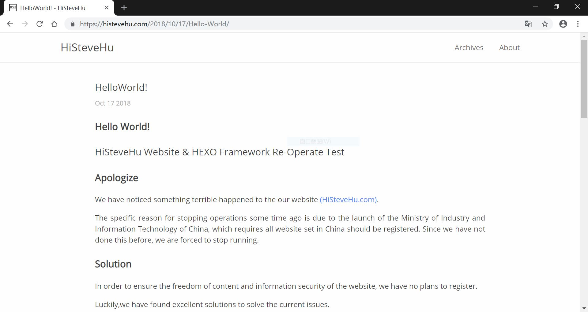
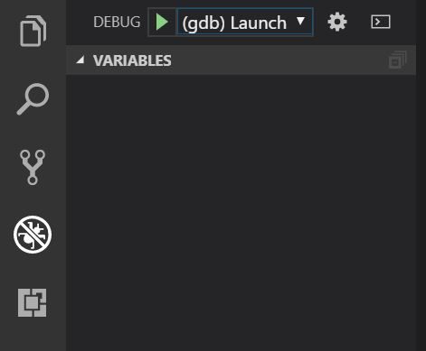
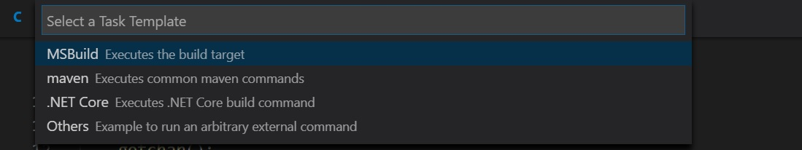

VisualStudio Code Configuration (C)
Introduction
VSCode is a lightweight, open source and popular editor which support for mainstream programming languages. Of course, C language is also supported. Just need to do some configuration before using.
Steps
Be sure you have installed the C/C++ Support provided by Microsoft

Be sure you have installed the MingGW installer and do the following actions:
- Mark necessary running parts: gdb-gcc(bin), gdb-gcc-g++(bin), then click upper left corner Installation > Apply Changes.
- configure system environment variable, add the MingW installation path to the path item.
- Restart VSCode
Open a folder with VSCode. Write a simple C program (Like printing a “HelloWorld !”) and save it with the name of “test.cpp“. Click Debug Icon , choose C++(GDB) in the drop down menu of the tab ,then click Gear icon. Then VSCode will generate a launch.json startup configuration file in the working directory automatically.

Note: VSCode debugging needs to be done in the open folder (You should open the folder with VSCode firstly , opening a separate cpp separately does not have the following configuration files. In other words, this cpp is in one In the folder! Unlike DevCpp and C-Free, you can debug a single cpp)
Open the launch.json file, then replace the file with the code below:
1
2
3
4
5
6
7
8
9
10
11
12
13
14
15
16
17
18
19
20
21
22
23
24
25
26{
"version": "0.2.0",
"configurations": [
{
"name": "(gdb) Launch",
"type": "cppdbg",
"request": "launch",
"program": "${workspaceRoot}/${fileBasenameNoExtension}.exe",
"args": [],
"stopAtEntry": false,
"cwd": "${workspaceRoot}",
"environment": [],
"externalConsole": true,
"MIMode": "gdb",
"miDebuggerPath": "C:\\MinGW\\bin\\gdb.exe", // The path of the miDebugger, note that it corresponds to the path of MinGw
"preLaunchTask": "gcc", // C++:g++, C:gcc
"setupCommands": [
{
"description": "Enable pretty-printing for gdb",
"text": "-enable-pretty-printing",
"ignoreFailures": true
}
]
}
]
}Save after replacement, then switch to test.cpp, press F5 to debug, then a message box will warn you to configure the task. Click Configure Task.

Select from the drop down menu: Create from a blank template > Others. Then VSCode will generate a Tasks.json configuration file in the working directory automatically.
Open the Tasks.json file, then replace the file with the code below:
1
2
3
4
5
6
7
8
9
10
11
12
13
14
15
16
17
18
19
20
21
22
23
24
25{
"version": "2.0.0",
"command": "gcc",
"args": [
"-g",
"${file}",
"-o",
"${fileBasenameNoExtension}.exe"
],
"problemMatcher": {
"owner": "cpp",
"fileLocation": [
"relative",
"${workspaceRoot}"
],
"pattern": {
"regexp": "^(.*):(\\d+):(\\d+):\\s+(warning|error):\\s+(.*)$",
"file": 1,
"line": 2,
"column": 3,
"severity": 4,
"message": 5
}
}
}
Tips
- Because VS needs to be configured separately for each folder, it is recommended to put the .vscode folder on top of your favorite folders so that you don’t have to reconfigure it.
- You don’t need a new configuration for each new cpp file. These configurations can be used in all subfolders and files in your configured folder.
- It is recommended to back up the .vscode folder (containing the configuration file you just created) so that when you are in a new path, you can just copy the backup .vscode folder into the root directory of the path then start working quickly.